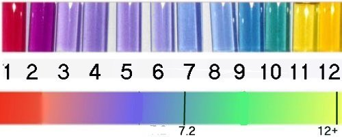

Methods of measuring pH
To measure the pH of a solution, a digital pH meter, or pH papers
such as litmus are used.
These methods can be expensive, especially if you are buying
the pool test strips.
pH meters begin selling for $70 and usually run $120 if you can
even find one.
Red Cabbage is happening
You really don't have to use either of them, as nature provides us
with pH indicators in the form of plant pigments which change color over
different pH ranges. One of the very best is red cabbage. Red cabbage juice
will function over a wide pH range, from as low as pH 1 up to pH 13.
Preparation
There are many ways to prepare the indicators,
My favorite is to chop up 1/2 of a head of red cabbage
place it in a pot of water, then
bringing it to a boil,
let it cool down slowly the color slowly drains out of the cells.
Filter and discard the solids,
evaporate and concentrate the juice Don't over heat it
too much, it will get brownish if you do.
Then dip blotter paper or paper towels , in the juice. Spread
them out to dry, then dip them again so they get a double dose
If you wish you may iron them flat, run through a shredder for individual
strips.
I usually just put drops on a full sheet.
pH measurements What to measure
Measurements are taken on polar (water soluble) solutions only.
Taking a pH reading on a non-polar (oil soluble) solution is futile.
If you do get a pH reading you are actually measuring the pH
of any polar solvent residue trapped in with the non-polar.
this may be an indication of purity of the non-polar and not much else

Above are pictures of the actual, indicator in water at the various pH's, Below is a color bar.
Do you see a problem in determining various pH from the top photo?
Many of the water colors look the same
pH 3 thru pH 6
pH 7 thru pH 9
pH 11 and pH12
The timing of the color indicator is not included.
Most indicators have a certain time window in which they should
be read, this true with red cabbage also
The pH is read within 3 -10 seconds and compared to the lower
color bar.
examples
pH-11
A drop of a solution at pH 11 will change from purple to yellow-green
very fast (3-10 seconds), and slowly continue changing until
it is yellow. If you check the paper after 30 seconds, you would not know
if the pH was 11 or 12 since both would be yellow
pH12
At pH of 12+ the drop will turn the paper from purple to green
to yellow very fast (3-10 seconds)
pH7.2
At the very first sign of blue within a few seconds of placing the
drop, stop, no more acid is needed,.
As you are shooting for the correct neutral pH you will be adding acid
and bringing it down from pH 12+.
so the tests will appear yellow then green then one test will be blue
after 3 seconds
Accuracy vs Precision
Accuracy - is closeness to the actual true value
Precision - is internal closeness of a set of measurements
Using the paper is too kewl, because before long you won't
care what the pH is.
All that will matter is that you saw the color change from purple to
green to yellow immediately after putting a drop on the paper.
At the neutral end you first saw a bit of blueness so you knew
you were at the neutral pH spot.
It is so perfect, I marvel still at all the go-go, that was dreamt
up with this red cabbage paper.
The pH paper is accurate to at least 0.4 of a pH unit or even
better when you include the time factor.
After doing it a few times your precision will be excellent 0.1 - 0.2
pH unit
The pH meters are accurate to 0.2 pH units
One
pH reading
Have developed a way to almost avoid taking a pH reading at all.
You may only need to take one reading, to verify the upper point
has been reached
I suggest you save this method for the day when you have had several
successful reactions. The observations you need to make will be clear
after you have already seen them several times.
The alkaline reading
After the completion of the reaction, add 200 ml - 400 ml of water,
then boil for 5 minutes. This should result in a clear fluid with the RP
settling to the bottom( a few aluminum potpies from soft drink cans, helps
remove any excess iodine, when boiling).
Filter the RP out of the reaction mix, ,
Begin adding base or a Sodium hydroxide solution.
Observation is the key, just watch what happens.
First the solution turns white when the lye hits it, then it clears
,
With more additions of lye the water layer becomes milky white,
and stays milky white for more than 30 seconds, you are very close to the
alkaline pH level.
The milky white is what?? A white precipitate?? It can only be that
which you are looking for.
Chili in the free base form, loosing its water solubility, coming out
of the water layer
Mix it well and observe closely for the whiteness to go away a little
bit, leaving the water layer cloudy
Add another dose NaOH, this puts it over the line, right
where it needs to be
add your non-polar solvent.
You can be certain because
1. the chili was seen becoming non polar.
2. additions of NaOH do not form any added white precipitate in the
water layer.
3. you may see a "lye lock", solidifying the water layer.
Wait a few minutes then test the pH of the water layer just to be certain
it is over pH 12.4
Toss in some table salt if you wish.
Lye Lock
Watch out for a solidification of the lye/water layer (lye lock) too
much solid material in the water lye , as it cools from the heat released
by adding the NaOH, the NaOH begins to solidify. One good thing is you
know the pH was high enough.
probably close to pH 13.7
Dilute it with warm water before it hardens, and begin draining out
the lower layer, contine diluting, or it will harden then it is more difficult
to keep dilute
keep it separated (don't shake)
Remove the lye solution
Washing the chili
After removing the lower water layer
Wash the non-polar/meth with about 1/2 volume of d-water
This means add water, shake fairly well, let it layer, and fully separate
and remove the water layer
Repeat the d-water wash three (3) times
Adding the HCl
Add an 1/2 volume of d-water again
Toss in a couple healthy squirts of HCl.
A bit less HCl than is needed, that will be 1 ml of 30%
HCl for each gram of expected product
Shake well
allow to form into two layers
Separate and save the water layer in your boiling bowl
Evaporate the water away
Enjoy the great crystal chili that pops out
then do another pull
Add more d-water to the non-polar/meth
Couple more squirts of HCl
shake well,
allow to layer
separate and evaporate
Continue in this fashion
Eventually you will get to the last pull,
you will know it is the final pull because a great deal of nasty
HCl vapor will come off when evaporating the mixture ,
You will have to wash the excess HCl out of the crushed crystals,
of this final pull, with acetone.
All the pulls are the same and great chili even though the pH was at
10 , 9, 8 or 7 when the shit was dropped out of the non-polar.
WHY?
Most of it happened with in a small pH range of pH 10.0 to pH 8.5
As the chili takes on a H+ attached to its nitrogen,
it is capable of hydrogen bonding . Once it accepts a Cl- ion,
it becomes suddenly very water soluble.
It is related only partially to the pH because if you were very careful
about any ions you could concievably maintain the freebase at pH 7.0 but
the -OH would interfere .
In this case it is the Cl- that is the primary factor affecting formation
of the water soluble salt. That is why it is very important once you have
the freebase form, to only use very pure distilled and deionized water
to wash the freebase clean. because any negative ion , is going to cause
a loss of product when washing the free base, depending upon the pH and
a dozen different concentrations of whatever ions are present,
The pH will drop with each washing. The pH of pure water is 7.0, distilled is often 6.8 , tap water can be up to 8.5+
The less foreign ions present the better control you will have.
Better yields
Better dope
Considering the shitty quality of muriatic acid, it would be great
to distill your own.
If you are consistantly getting dope that smokes burns dark and gakky
, consider the source of your HCl probably also contains sulfuric acid,
and you might consider gassing it onstead or distill your HCl first.